data {
int<lower=0> nObs; // number of observations
int<lower=0> nItems; // number of items
matrix[nObs, nItems] Y; // item responses in a matrix
vector[nItems] meanMu;
matrix[nItems, nItems] covMu; // prior covariance matrix for coefficients
vector[nItems] meanLambda; // prior mean vector for coefficients
matrix[nItems, nItems] covLambda; // prior covariance matrix for coefficients
vector[nItems] psiRate; // prior rate parameter for unique standard deviations
}Generalized Measurement Models: Modeling Observed Data
Lecture 4b
Today’s Lecture Objectives
- Show different modeling specifications for different types of item response data
- Show how parameterization differs for standardized latent variables vs. marker item scale identification
Example Data: Conspiracy Theories
Today’s example is from a bootstrap resample of 177 undergraduate students at a large state university in the Midwest. The survey was a measure of 10 questions about their beliefs in various conspiracy theories that were being passed around the internet in the early 2010s. Additionally, gender was included in the survey. All items responses were on a 5- point Likert scale with:
- Strongly Disagree
- Disagree
- Neither Agree or Disagree
- Agree
- Strongly Agree
Please note, the purpose of this survey was to study individual beliefs regarding conspiracies. The questions can provoke some strong emotions given the world we live in currently. All questions were approved by university IRB prior to their use.
Our purpose in using this instrument is to provide a context that we all may find relevant as many of these conspiracy theories are still prevalent today.
Conspiracy Theory Questions 1-5
Questions:
- The U.S. invasion of Iraq was not part of a campaign to fight terrorism, but was driven by oil companies and Jews in the U.S. and Israel.
- Certain U.S. government officials planned the attacks of September 11, 2001 because they wanted the United States to go to war in the Middle East.
- President Barack Obama was not really born in the United States and does not have an authentic Hawaiian birth certificate.
- The current financial crisis was secretly orchestrated by a small group of Wall Street bankers to extend the power of the Federal Reserve and further their control of the world’s economy.
- Vapor trails left by aircraft are actually chemical agents deliberately sprayed in a clandestine program directed by government officials.
Conspiracy Theory Questions 6-10
Questions:
- Billionaire George Soros is behind a hidden plot to destabilize the American government, take control of the media, and put the world under his control.
- The U.S. government is mandating the switch to compact fluorescent light bulbs because such lights make people more obedient and easier to control.
- Government officials are covertly Building a 12-lane "NAFTA superhighway" that runs from Mexico to Canada through America’s heartland.
- Government officials purposely developed and spread drugs like crack-cocaine and diseases like AIDS in order to destroy the African American community.
- God sent Hurricane Katrina to punish America for its sins.
Data Visualization: Q1-Q5
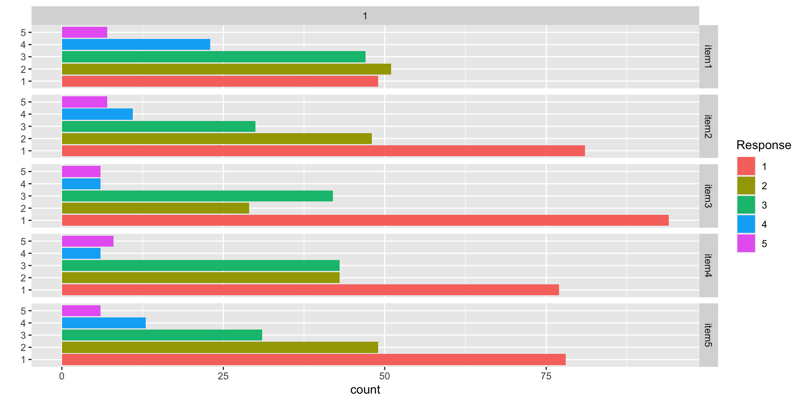Data Visualization: Q6-Q10
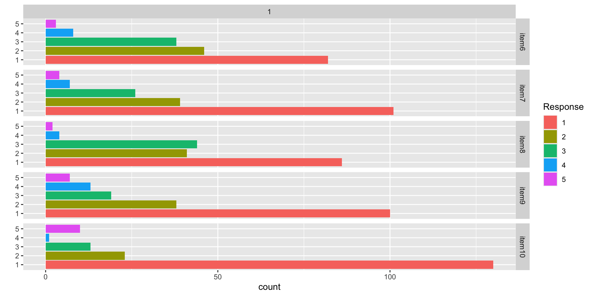Conspiracy Theories: Assumed Latent Variable
For today’s lecture, we will assume each of the 10 items measures a single latent variable representing a person’s tendency to believe in conspiracy theories
- We will denote this latent variable as \(\theta_p\) for each person
- \(p\) is the index for person (with \(p=1, \ldots, P\))
- We will assume this latent variable is:
- Continuous
- Normally distributed: \(\theta_p \sim N\left(\mu_\theta, \sigma_\theta \right)\)
- We will make differing assumptions about the scale (the latent variable mean and standard deviation) to show how syntax works for either
- Across all people, we will denote the set of vector of latent variables as
\[\boldsymbol{\Theta} = \left[\theta_1, \ldots, \theta_P \right]^T \]
Building Measurement Models
Measurement Model Analysis Steps
- Specify model
- Specify scale identification method for latent variables
- Estimate model
- Examine model-data fit
- Iterate between steps 1-4 until adequate fit is achieved
Measurement Model Auxiliary Components
- Score estimation (and secondary analyses with scores)
- Item evaluation
- Scale construction
- Equating
- Measurement invariance/differential item functioning
Modeling Observed Variables with Normal Distributions
Observed Variables with Normal Distributions
A psychometric model posits that one or more hypothesized latent variables predict a person’s response to observed items
- Our hypothesized latent variable: Tendency to Believe in Conspiracies (\(\theta_p\))
- One variable: Unidimensional
- Each observed variable (item response) is included in the model
- Today, we will assume each response follows a normal distribution
- This is the assumption underlying confirmatory factor analysis (CFA) models
- This assumption is tenuous at best
Normal Distribution: Linear Regression
As we saw in linear models, when an outcome variable (here \(Y_p\)) is assumed to follow a (conditional) normal distribution, this places a linear regression-style model on the outcome:
For example, take the following linear regression: \[Y_p = \beta_0 + \beta_1 X_p + e_p,\] with \(e_p \sim N\left(0, \sigma_e \right)\)
This implies:
\[ Y_p \sim N\left(\beta_0 + \beta_1 X_p, \sigma_e \right)\]
Where:
- The (conditional) mean of \(Y_p\) is \(\beta_0 + \beta_1 X_p\)
- The (residual) standard deviation of \(Y_p\) is \(\sigma_e\)
The Psychometric Model
For the psychometric model:
- We replace the observed variable \(X_p\) with the latent variable \(\theta_p\) (for all observed variables)
\[ \begin{array}{cc} Y_{p1} = \mu_1 + \lambda_1 \theta_p + e_{p, 1}; & e_{p,1} \sim N\left(0, \psi_1^2 \right) \\ Y_{p2} = \mu_2 + \lambda_2 \theta_p + e_{p, 2}; & e_{p,2} \sim N\left(0, \psi_2^2 \right) \\ Y_{p3} = \mu_3 + \lambda_3 \theta_p + e_{p, 3}; & e_{p,3} \sim N\left(0, \psi_3^2 \right) \\ Y_{p4} = \mu_4 + \lambda_4 \theta_p + e_{p, 4}; & e_{p,4} \sim N\left(0, \psi_4^2 \right) \\ Y_{p5} = \mu_5 + \lambda_5 \theta_p + e_{p, 5}; & e_{p,5} \sim N\left(0, \psi_5^2 \right) \\ Y_{p6} = \mu_6 + \lambda_6 \theta_p + e_{p, 6}; & e_{p,6} \sim N\left(0, \psi_6^2 \right) \\ Y_{p7} = \mu_7 + \lambda_7 \theta_p + e_{p, 7}; & e_{p,7} \sim N\left(0, \psi_7^2 \right) \\ Y_{p8} = \mu_8 + \lambda_8 \theta_p + e_{p, 8}; & e_{p,8} \sim N\left(0, \psi_8^2 \right) \\ Y_{p9} = \mu_9 + \lambda_9 \theta_p + e_{p, 9}; & e_{p,9} \sim N\left(0, \psi_9^2 \right) \\ Y_{p10} = \mu_{10} + \lambda_{10} \theta_p + e_{p, 10}; & e_{p,10} \sim N\left(0, \psi_{10}^2 \right) \\ \end{array} \]
Measurement Model Parameters
For an item \(i\) the model is:
\[ \begin{array}{cc} Y_{pi} = \mu_i + \lambda_i \theta_p + e_{p,i}; & e_{p,i} \sim N\left(0, \psi_i^2 \right) \\ \end{array} \] The parameters of the model use different notation from typical linear regression models and have different names (they are called item parameters)
- \(\mu_i\): Item intercept
- The expected score on the item when \(\theta_p = 0\)
- Similar to \(\beta_0\)
- \(\lambda_i\): Factor loading or item discrimination
- The change in the expected score of an item for a one-unit increase in \(\theta_p\)
- Similar to \(\beta_1\)
- \(\psi^2_i\): Unique variance (Note: In Stan, we will have to specify \(\psi_e\); the unique standard deviation)
- The variance of the residuals (the expected score minus observed score)
- Similar to residual variance \(\sigma^2_e\)
Model Specification
The set of equations on the previous slide formed step #1 of the Measurement Model Analysis Steps:
- Specify Model
The next step is:
- Specify scale identification method for latent variables
We will initially assume \(\theta_p \sim N(0,1)\), which allows us to estimate all item parameters of the model
- This is what we call a standardized latent variable
- They are like Z-scores
Implementing Normal Outcomes in Stan
Implementing Normal Outcomes in Stan
There are a few changes needed to make Stan estimate psychometric models with normal outcomes:
- The model (predictor) matrix cannot be used
- This is because the latent variable will be sampled–so the model matrix cannot be formed as a constant
- The data will be imported as a matrix
- More than one outcome means more than one column vector of data
- The parameters will be specified as vectors of each type
- Each item will have its own set of parameters
- Implications for the use of prior distributions
Stan’s data {} Block
Stan’s parameters {} Block
parameters {
vector[nObs] theta; // the latent variables (one for each person)
vector[nItems] mu; // the item intercepts (one for each item)
vector[nItems] lambda; // the factor loadings/item discriminations (one for each item)
vector<lower=0>[nItems] psi; // the unique standard deviations (one for each item)
}Here, the parameterization of \(\lambda\) (factor loadings/discrimination parameters) can lead to problems in estimation
- The issue: \(\lambda_i \theta_p = (-\lambda_i)(-\theta_p)\)
- Depending on the random starting values of each of these parameters (per chain), a given chain may converge to a different region
- To demonstrate (later), we will start with a different random number seed
- Currently using 09102022: works fine
- Change to 25102022: big problems
Stan’s model Block
model {
lambda ~ multi_normal(meanLambda, covLambda); // Prior for item discrimination/factor loadings
mu ~ multi_normal(meanMu, covMu); // Prior for item intercepts
psi ~ exponential(psiRate); // Prior for unique standard deviations
theta ~ normal(0, 1); // Prior for latent variable (with mean/sd specified)
for (item in 1:nItems){
Y[,item] ~ normal(mu[item] + lambda[item]*theta, psi[item]);
}
}The loop here conducts the model, separately, for each item
- Assumption of conditional independence enables this
- Non-independence would need multivariate normal model
- The item mean is set by the conditional mean of the model
- The item SD is set by the unique variance parameter
- The loop puts each item’s parameters into the equation
Choosing Prior Distributions for Parameters
There is not uniform agreement about the choices of prior distributions for item parameters
- We will use uninformative priors on each to begin
- After first model analysis, we will discuss these choices and why they were made
- For now:
- Item intercepts: \(\mu_i \sim N\left(0, \sigma^2_{\mu_i} = 1000\right)\)
- Factor loadings/item discriminations: \(\lambda_i \sim N(0, \sigma^2_{\lambda_i} = 1000)\)
- Unique standard deviations: \(\psi_i \sim \text{exponential}\left(.01\right)\)
Prior Density Function Plots

R’s Data List Object
# data dimensions
nObs = nrow(conspiracyItems)
nItems = ncol(conspiracyItems)
# item intercept hyperparameters
muMeanHyperParameter = 0
muMeanVecHP = rep(muMeanHyperParameter, nItems)
muVarianceHyperParameter = 1000
muCovarianceMatrixHP = diag(x = muVarianceMatrixHP, nrow = nItems)
# item discrimination/factor loading hyperparameters
lambdaMeanHyperParameter = 0
lambdaMeanVecHP = rep(lambdaMeanHyperParameter, nItems)
lambdaVarianceHyperParameter = 1000
lambdaCovarianceMatrixHP = diag(x = lambdaVarianceHyperParameter, nrow = nItems)
# unique standard deviation hyperparameters
psiRateHyperParameter = .01
psiRateVecHP = rep(.1, nItems)
modelCFA_data = list(
nObs = nObs,
nItems = nItems,
Y = conspiracyItems,
meanMu = muMeanVecHP,
covMu = muCovarianceMatrixHP,
meanLambda = lambdaMeanVecHP,
covLambda = lambdaCovarianceMatrixHP,
psiRate = psiRateVecHP
)Running the Model In Stan
The Stan program takes longer to run than in linear models:
- Number of parameters = 207
- 10 observed variables (with three item parameters each: \(\mu_i\), \(\lambda_i\), and \(\psi_i\))
- 177 latent variables (one for each person: 177 parameters)
- Key syntax block is the observed variable definition:
- cmdstanr samples call:
- Note: Typically, longer chains are needed for larger models like this
- These will become even longer when we use non-normal distributions for observed data
Model Results
- Checking convergence with \(\hat{R}\) (PSRF):
[1] 1.530704- Item Parameter Results:
# A tibble: 30 × 10
variable mean median sd mad q5 q95 rhat ess_bulk ess_tail
<chr> <dbl> <dbl> <dbl> <dbl> <dbl> <dbl> <dbl> <dbl> <dbl>
1 mu[1] 2.37 2.37 0.0865 0.0862 2.23 2.51 1.00 1501. 2931.
2 mu[2] 1.95 1.95 0.0851 0.0862 1.81 2.09 1.00 1115. 1986.
3 mu[3] 1.88 1.88 0.0843 0.0842 1.74 2.01 1.00 1369. 3128.
4 mu[4] 2.01 2.01 0.0839 0.0835 1.87 2.15 1.00 1158. 2449.
5 mu[5] 1.98 1.98 0.0844 0.0855 1.85 2.12 1.00 875. 1774.
6 mu[6] 1.89 1.89 0.0765 0.0768 1.77 2.02 1.00 891. 1703.
7 mu[7] 1.72 1.72 0.0756 0.0764 1.60 1.85 1.00 1190. 2494.
8 mu[8] 1.84 1.84 0.0723 0.0720 1.72 1.96 1.00 920. 2146.
9 mu[9] 1.81 1.81 0.0859 0.0839 1.67 1.95 1.00 1213. 2550.
10 mu[10] 1.52 1.52 0.0807 0.0818 1.39 1.65 1.00 1635. 2991.
11 lambda[1] 0.369 0.699 0.643 0.127 -0.799 0.863 1.53 7.14 27.0
12 lambda[2] 0.434 0.833 0.756 0.117 -0.932 0.988 1.53 7.14 28.6
13 lambda[3] 0.401 0.766 0.697 0.118 -0.863 0.921 1.53 7.15 27.5
14 lambda[4] 0.421 0.807 0.733 0.115 -0.905 0.961 1.53 7.15 29.5
15 lambda[5] 0.497 0.961 0.864 0.107 -1.05 1.11 1.53 7.18 31.8
16 lambda[6] 0.449 0.867 0.779 0.0964 -0.950 0.997 1.53 7.21 32.0
17 lambda[7] 0.381 0.732 0.664 0.104 -0.818 0.870 1.53 7.15 29.5
18 lambda[8] 0.425 0.823 0.740 0.0941 -0.900 0.947 1.53 7.19 28.7
19 lambda[9] 0.430 0.822 0.747 0.121 -0.928 0.978 1.53 7.15 26.9
20 lambda[10] 0.336 0.635 0.585 0.118 -0.731 0.791 1.53 7.13 27.9
21 psi[1] 0.892 0.889 0.0502 0.0496 0.814 0.977 1.00 13975. 5941.
22 psi[2] 0.734 0.733 0.0444 0.0435 0.664 0.810 1.00 11949. 6087.
23 psi[3] 0.781 0.780 0.0451 0.0439 0.710 0.858 1.00 12284. 5946.
24 psi[4] 0.757 0.754 0.0439 0.0442 0.688 0.832 1.00 13409. 6325.
25 psi[5] 0.545 0.544 0.0368 0.0364 0.486 0.607 1.00 8859. 6515.
26 psi[6] 0.505 0.504 0.0343 0.0339 0.452 0.563 1.00 9669. 6941.
27 psi[7] 0.686 0.684 0.0402 0.0401 0.623 0.755 1.00 14073. 6354.
28 psi[8] 0.480 0.479 0.0320 0.0318 0.430 0.534 1.00 9692. 6887.
29 psi[9] 0.782 0.781 0.0454 0.0452 0.711 0.860 1.00 13291. 5775.
30 psi[10] 0.840 0.838 0.0473 0.0473 0.766 0.921 1.00 15918. 6509. Modeling Strategy vs. Didactic Strategy
At this point, one should investigate model fit of the model we just ran
- If the model does not fit, then all model parameters could be biased
- Both item parameters and person parameters (\(\theta_p\))
- Moreover, the uncertainty accompanying each parameter (the posterior standard deviation) may also be biased
- Especially bad for psychometric models as we quantify reliaiblity with these numbers
But, to teach generalized measurement models, we will first talk about differing models for observed data
- Different distributions
- Different parameterizations across the different distributions
Then we will discuss model fit methods
Investigating Item Parameters
One plot that can help provide information about the item parameters is the item characteristic curve (ICC)
- Not called this in CFA (but equivalent)
- The ICC is the plot of the expected value of the response conditional on the value of the latent traits, for a range of latent trait values
\[E \left(Y_{pi} \mid \theta_p \right) = \mu_{i} +\lambda_{i}\theta_p \]
- Because we have sampled values for each parameter, we can plot one ICC for each posterior draw
Posterior ICC Plots
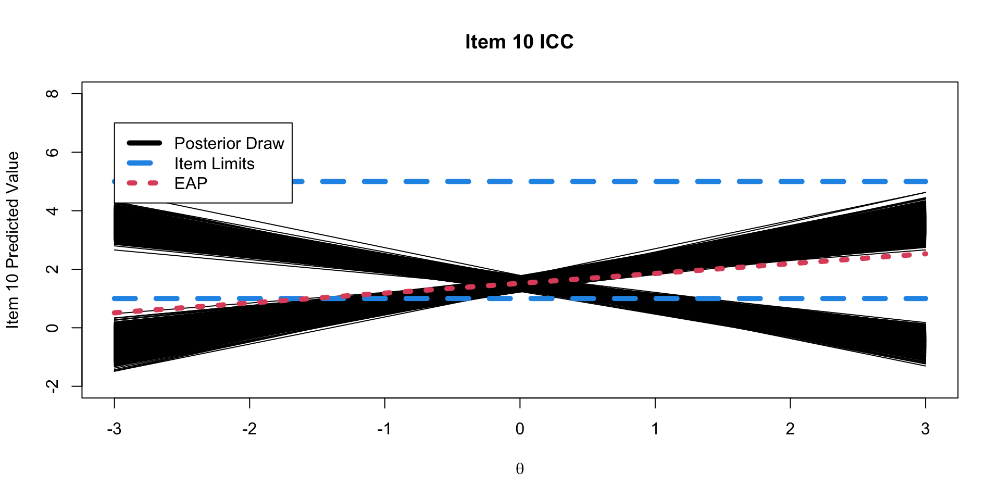Posterior Distribution for Item Parameters
Before moving onto the latent variables, let’s note the posterior distribution of the item parameters (for a single item):
\[f(\mu_i, \lambda_i, \psi_i \mid \boldsymbol{Y}) \propto f\left(\boldsymbol{Y} \mid \mu_i, \lambda_i, \psi_i \right) f\left(\mu_i, \lambda_i, \psi_i \right) \]
\(f(\mu_i, \lambda_i, \psi_i \mid \boldsymbol{Y})\) is the (joint) posterior distribution of the parameters for item \(i\)
- The distribution of the parameters conditional on the data
\(f\left(\boldsymbol{Y} \mid \mu_i, \lambda_i, \psi_i \right)\) is the distribution we defined for our observed data:
\[ f\left(\boldsymbol{Y} \mid \mu_i, \lambda_i, \psi_i \right) \sim N \left(\mu_i+\lambda_i\theta_p, \psi_i \right)\]
\(f\left(\mu_i, \lambda_i, \psi_i \right)\) is the (joint) prior distribution for each of the parameters, which, are independent:
\[ f\left(\mu_i, \lambda_i, \psi_i \right) = f(\mu_i)f(\lambda_i)f(\psi_i)\]
Investigating the Latent Variables
The estimated latent variables are then:
# A tibble: 177 × 10
variable mean median sd mad q5 q95 rhat ess_bulk ess_tail
<chr> <dbl> <dbl> <dbl> <dbl> <dbl> <dbl> <dbl> <dbl> <dbl>
1 theta[1] 0.00733 8.16e-3 0.248 0.249 -0.402 0.411 1.00 5797. 6152.
2 theta[2] 0.768 1.42e+0 1.35 0.405 -1.75 1.94 1.53 7.11 26.8
3 theta[3] 0.853 1.59e+0 1.50 0.419 -1.94 2.11 1.53 7.13 27.5
4 theta[4] -0.465 -8.22e-1 0.846 0.395 -1.32 1.14 1.53 7.13 27.2
5 theta[5] 0.0211 2.07e-2 0.244 0.243 -0.382 0.422 1.01 309. 5112.
6 theta[6] -0.492 -8.69e-1 0.882 0.399 -1.36 1.17 1.53 7.10 25.7
7 theta[7] -0.170 -2.36e-1 0.385 0.371 -0.711 0.548 1.45 7.76 26.5
8 theta[8] -0.0266 -2.70e-2 0.253 0.251 -0.447 0.388 1.02 160. 4022.
9 theta[9] -0.393 -6.84e-1 0.725 0.380 -1.15 0.997 1.53 7.12 27.1
10 theta[10] 0.0209 1.73e-2 0.243 0.239 -0.373 0.424 1.01 274. 4676.
11 theta[11] -0.488 -8.68e-1 0.887 0.391 -1.35 1.21 1.53 7.10 27.2
12 theta[12] 0.128 1.50e-1 0.329 0.326 -0.460 0.631 1.33 9.38 29.4
13 theta[13] -0.375 -6.41e-1 0.695 0.379 -1.12 0.958 1.53 7.11 28.1
14 theta[14] -0.488 -8.72e-1 0.888 0.386 -1.36 1.19 1.53 7.10 26.3
15 theta[15] -0.419 -7.31e-1 0.769 0.388 -1.21 1.05 1.53 7.11 27.6
16 theta[16] -0.0292 -2.89e-2 0.251 0.252 -0.443 0.383 1.03 87.6 4604.
17 theta[17] -0.0324 -3.29e-2 0.256 0.258 -0.445 0.389 1.03 103. 3499.
18 theta[18] -0.330 -5.54e-1 0.628 0.389 -1.05 0.860 1.53 7.10 28.1
19 theta[19] 0.934 1.75e+0 1.64 0.415 -2.10 2.28 1.53 7.14 26.5
20 theta[20] -0.465 -8.23e-1 0.844 0.391 -1.31 1.13 1.53 7.11 27.2
21 theta[21] -0.125 -1.61e-1 0.328 0.322 -0.617 0.472 1.33 9.36 30.2
22 theta[22] -0.490 -8.74e-1 0.887 0.387 -1.36 1.19 1.53 7.08 26.2
23 theta[23] -0.490 -8.74e-1 0.889 0.397 -1.35 1.20 1.53 7.11 26.4
24 theta[24] -0.489 -8.67e-1 0.887 0.399 -1.37 1.19 1.53 7.11 26.4
25 theta[25] 0.271 4.26e-1 0.532 0.395 -0.746 0.931 1.52 7.13 26.4
26 theta[26] 0.370 6.21e-1 0.683 0.398 -0.942 1.12 1.53 7.10 27.1
27 theta[27] -0.0576 -6.36e-2 0.272 0.270 -0.498 0.396 1.09 29.1 98.5
28 theta[28] 0.604 1.10e+0 1.08 0.391 -1.42 1.59 1.53 7.11 26.5
29 theta[29] 0.446 7.80e-1 0.814 0.400 -1.11 1.28 1.53 7.11 26.7
30 theta[30] 0.840 1.56e+0 1.48 0.422 -1.91 2.09 1.53 7.12 26.8
31 theta[31] 0.274 4.35e-1 0.535 0.399 -0.756 0.924 1.52 7.14 27.4
32 theta[32] -0.210 -3.10e-1 0.446 0.386 -0.804 0.630 1.50 7.34 26.7
33 theta[33] 0.162 2.18e-1 0.374 0.358 -0.540 0.699 1.42 8.12 26.7
34 theta[34] -0.490 -8.74e-1 0.887 0.389 -1.35 1.20 1.53 7.11 26.7
35 theta[35] -0.333 -5.62e-1 0.631 0.381 -1.04 0.876 1.53 7.10 29.1
36 theta[36] -0.395 -6.88e-1 0.734 0.384 -1.17 1.01 1.53 7.09 26.5
37 theta[37] -0.492 -8.74e-1 0.888 0.388 -1.37 1.19 1.53 7.11 26.7
38 theta[38] -0.107 -1.25e-1 0.313 0.314 -0.584 0.436 1.27 10.8 33.2
39 theta[39] -0.491 -8.77e-1 0.886 0.386 -1.35 1.20 1.53 7.12 26.8
40 theta[40] 0.0230 2.21e-2 0.247 0.243 -0.382 0.437 1.01 302. 3971.
41 theta[41] -0.491 -8.74e-1 0.887 0.383 -1.36 1.19 1.53 7.11 26.8
42 theta[42] -0.0435 -4.57e-2 0.266 0.264 -0.478 0.407 1.05 49.9 352.
43 theta[43] -0.322 -5.35e-1 0.615 0.398 -1.03 0.861 1.53 7.09 27.8
44 theta[44] -0.0292 -3.12e-2 0.252 0.249 -0.431 0.393 1.03 92.2 3590.
45 theta[45] 0.189 2.69e-1 0.413 0.389 -0.583 0.751 1.48 7.53 26.7
46 theta[46] 0.132 1.68e-1 0.339 0.332 -0.500 0.636 1.36 8.98 30.5
47 theta[47] 0.250 3.94e-1 0.501 0.386 -0.709 0.884 1.52 7.16 27.9
48 theta[48] -0.416 -7.24e-1 0.770 0.395 -1.22 1.06 1.53 7.09 26.4
49 theta[49] -0.491 -8.72e-1 0.886 0.379 -1.36 1.19 1.53 7.09 27.5
50 theta[50] 0.0774 8.79e-2 0.296 0.298 -0.429 0.549 1.15 17.3 49.8
51 theta[51] -0.488 -8.69e-1 0.890 0.400 -1.37 1.19 1.53 7.11 28.5
52 theta[52] 0.161 2.20e-1 0.374 0.357 -0.536 0.697 1.43 8.04 25.6
53 theta[53] -0.488 -8.71e-1 0.885 0.389 -1.35 1.19 1.53 7.12 26.7
54 theta[54] 0.608 1.10e+0 1.08 0.388 -1.42 1.59 1.53 7.13 27.5
55 theta[55] -0.492 -8.73e-1 0.884 0.392 -1.36 1.18 1.53 7.11 29.2
56 theta[56] -0.489 -8.76e-1 0.886 0.376 -1.34 1.19 1.53 7.10 28.0
57 theta[57] -0.366 -6.21e-1 0.689 0.397 -1.13 0.948 1.53 7.09 27.3
58 theta[58] -0.489 -8.67e-1 0.888 0.397 -1.36 1.19 1.53 7.11 27.7
59 theta[59] -0.0334 -3.62e-2 0.256 0.258 -0.446 0.392 1.04 71.7 329.
60 theta[60] -0.324 -5.41e-1 0.612 0.386 -1.01 0.863 1.53 7.11 27.0
61 theta[61] 0.694 1.27e+0 1.22 0.403 -1.60 1.78 1.53 7.13 27.6
62 theta[62] 0.162 2.24e-1 0.374 0.354 -0.535 0.700 1.43 8.01 28.5
63 theta[63] -0.491 -8.73e-1 0.886 0.385 -1.36 1.19 1.53 7.11 26.2
64 theta[64] 0.684 1.26e+0 1.22 0.399 -1.60 1.76 1.53 7.15 27.8
65 theta[65] 0.605 1.10e+0 1.08 0.395 -1.43 1.59 1.53 7.12 28.1
66 theta[66] -0.375 -6.42e-1 0.700 0.398 -1.13 0.964 1.53 7.09 27.2
67 theta[67] 0.271 4.30e-1 0.536 0.405 -0.763 0.925 1.52 7.14 26.6
68 theta[68] 0.426 7.48e-1 0.786 0.385 -1.08 1.24 1.53 7.14 27.2
69 theta[69] -0.266 -4.23e-1 0.527 0.395 -0.917 0.739 1.52 7.13 27.3
70 theta[70] 0.444 7.79e-1 0.813 0.395 -1.11 1.27 1.53 7.12 28.9
71 theta[71] 0.0362 3.55e-2 0.251 0.252 -0.375 0.450 1.03 102. 4065.
72 theta[72] 0.523 9.39e-1 0.949 0.400 -1.28 1.44 1.53 7.14 26.7
73 theta[73] -0.0108 -1.09e-2 0.244 0.244 -0.415 0.392 1.00 5018. 4638.
74 theta[74] -0.491 -8.76e-1 0.885 0.388 -1.35 1.20 1.53 7.10 25.7
75 theta[75] -0.490 -8.69e-1 0.887 0.403 -1.36 1.20 1.53 7.10 27.9
76 theta[76] 1.63 3.13e+0 2.84 0.466 -3.52 3.70 1.53 7.18 29.7
77 theta[77] -0.395 -6.80e-1 0.729 0.387 -1.16 1.02 1.53 7.11 27.8
78 theta[78] 0.576 1.04e+0 1.03 0.393 -1.37 1.54 1.53 7.13 26.1
79 theta[79] 0.937 1.75e+0 1.64 0.418 -2.10 2.28 1.53 7.11 29.5
80 theta[80] 0.305 4.99e-1 0.586 0.398 -0.821 0.993 1.53 7.11 27.3
81 theta[81] 0.0210 1.93e-2 0.252 0.252 -0.391 0.439 1.02 204. 4812.
82 theta[82] 0.0104 9.84e-3 0.252 0.251 -0.409 0.427 1.00 5100. 4938.
83 theta[83] -0.490 -8.74e-1 0.888 0.388 -1.35 1.19 1.53 7.09 28.2
84 theta[84] 0.790 1.46e+0 1.39 0.406 -1.80 1.98 1.53 7.12 26.3
85 theta[85] 0.105 1.22e-1 0.305 0.304 -0.422 0.576 1.25 11.4 36.8
86 theta[86] -0.490 -8.76e-1 0.884 0.387 -1.35 1.17 1.53 7.13 27.8
87 theta[87] 0.0871 9.95e-2 0.283 0.282 -0.398 0.531 1.18 15.0 46.8
88 theta[88] -0.160 -2.14e-1 0.372 0.361 -0.684 0.523 1.43 7.97 28.2
89 theta[89] -0.492 -8.76e-1 0.888 0.386 -1.38 1.19 1.53 7.10 26.7
90 theta[90] 0.420 7.24e-1 0.768 0.395 -1.04 1.23 1.53 7.10 27.4
91 theta[91] -0.418 -7.32e-1 0.769 0.386 -1.20 1.06 1.53 7.10 28.4
92 theta[92] 0.529 9.49e-1 0.954 0.407 -1.28 1.45 1.53 7.12 27.3
93 theta[93] 0.00947 7.25e-3 0.252 0.252 -0.407 0.429 1.00 5003. 5061.
94 theta[94] 1.30 2.47e+0 2.27 0.448 -2.84 3.02 1.53 7.14 27.5
95 theta[95] 0.829 1.54e+0 1.46 0.415 -1.90 2.05 1.53 7.11 27.4
96 theta[96] 0.161 2.17e-1 0.368 0.359 -0.514 0.688 1.44 7.88 29.8
97 theta[97] 0.135 1.77e-1 0.339 0.330 -0.489 0.631 1.35 9.03 29.3
98 theta[98] -0.488 -8.72e-1 0.887 0.394 -1.36 1.20 1.53 7.09 27.5
99 theta[99] 0.608 1.10e+0 1.08 0.397 -1.43 1.60 1.53 7.12 28.7
100 theta[10… -0.465 -8.23e-1 0.843 0.376 -1.29 1.14 1.53 7.10 26.9
101 theta[10… -0.351 -5.98e-1 0.662 0.382 -1.07 0.925 1.53 7.11 27.5
102 theta[10… 1.41 2.69e+0 2.45 0.456 -3.06 3.25 1.53 7.15 27.3
103 theta[10… -0.332 -5.59e-1 0.633 0.387 -1.04 0.883 1.53 7.14 26.5
104 theta[10… 0.428 7.40e-1 0.790 0.415 -1.08 1.26 1.53 7.11 28.3
105 theta[10… -0.0423 -4.70e-2 0.272 0.268 -0.480 0.419 1.05 53.6 557.
106 theta[10… 0.565 1.02e+0 1.01 0.402 -1.33 1.52 1.53 7.14 28.9
107 theta[10… 0.793 1.47e+0 1.39 0.402 -1.80 1.98 1.53 7.11 27.2
108 theta[10… 0.421 7.33e-1 0.765 0.382 -1.04 1.21 1.53 7.11 27.8
109 theta[10… 0.516 9.19e-1 0.932 0.405 -1.24 1.42 1.53 7.12 28.1
110 theta[11… 0.0214 2.35e-2 0.248 0.248 -0.385 0.432 1.01 376. 4176.
111 theta[11… 0.0557 5.94e-2 0.268 0.267 -0.393 0.488 1.09 28.8 99.4
112 theta[11… -0.324 -5.40e-1 0.609 0.383 -1.02 0.839 1.53 7.10 27.2
113 theta[11… 0.186 2.70e-1 0.405 0.371 -0.583 0.740 1.48 7.49 27.5
114 theta[11… -0.158 -2.15e-1 0.371 0.354 -0.685 0.536 1.43 8.02 29.7
115 theta[11… 0.431 7.45e-1 0.789 0.407 -1.07 1.26 1.53 7.09 29.2
116 theta[11… -0.0865 -9.56e-2 0.282 0.284 -0.540 0.394 1.19 14.2 45.8
117 theta[11… 0.0323 3.68e-2 0.252 0.252 -0.391 0.450 1.03 91.4 3091.
118 theta[11… 0.161 2.20e-1 0.370 0.352 -0.529 0.687 1.43 7.98 26.8
119 theta[11… -0.416 -7.34e-1 0.763 0.370 -1.20 1.03 1.53 7.11 28.1
120 theta[12… -0.488 -8.69e-1 0.885 0.388 -1.35 1.19 1.53 7.10 28.7
121 theta[12… 0.106 1.23e-1 0.314 0.317 -0.429 0.599 1.23 12.4 40.7
122 theta[12… -0.321 -5.35e-1 0.611 0.395 -1.02 0.854 1.53 7.11 26.0
123 theta[12… 0.607 1.10e+0 1.08 0.396 -1.42 1.59 1.53 7.10 27.7
124 theta[12… 0.520 9.21e-1 0.931 0.399 -1.23 1.42 1.53 7.13 26.7
125 theta[12… -0.489 -8.71e-1 0.889 0.390 -1.36 1.20 1.53 7.10 27.2
126 theta[12… -0.323 -5.37e-1 0.611 0.397 -1.02 0.840 1.53 7.10 26.9
127 theta[12… 0.565 1.02e+0 1.01 0.394 -1.34 1.51 1.53 7.16 27.5
128 theta[12… -0.424 -7.36e-1 0.775 0.395 -1.22 1.05 1.53 7.09 28.0
129 theta[12… -0.331 -5.54e-1 0.633 0.392 -1.04 0.882 1.53 7.11 26.9
130 theta[13… 0.933 1.75e+0 1.64 0.415 -2.10 2.27 1.53 7.12 27.7
131 theta[13… -0.169 -2.32e-1 0.388 0.360 -0.713 0.558 1.43 7.93 26.8
132 theta[13… 0.830 1.54e+0 1.46 0.427 -1.88 2.07 1.53 7.10 27.0
133 theta[13… -0.491 -8.78e-1 0.891 0.387 -1.36 1.20 1.53 7.11 26.4
134 theta[13… 1.30 2.48e+0 2.27 0.444 -2.83 3.01 1.53 7.14 28.0
135 theta[13… -0.394 -6.86e-1 0.732 0.388 -1.16 0.999 1.53 7.09 26.4
136 theta[13… -0.489 -8.69e-1 0.887 0.391 -1.36 1.19 1.53 7.10 26.3
137 theta[13… 0.386 6.66e-1 0.719 0.386 -1.00 1.15 1.53 7.11 27.0
138 theta[13… -0.394 -6.79e-1 0.726 0.393 -1.16 0.986 1.53 7.09 26.3
139 theta[13… 0.0245 2.31e-2 0.253 0.252 -0.389 0.447 1.01 312. 5577.
140 theta[14… -0.0232 -1.86e-2 0.251 0.255 -0.445 0.381 1.02 149. 2780.
141 theta[14… -0.420 -7.29e-1 0.771 0.394 -1.21 1.04 1.53 7.10 26.9
142 theta[14… -0.489 -8.71e-1 0.887 0.391 -1.35 1.19 1.53 7.11 26.0
143 theta[14… -0.488 -8.74e-1 0.886 0.377 -1.34 1.19 1.53 7.14 27.0
144 theta[14… 0.410 7.08e-1 0.750 0.399 -1.03 1.19 1.53 7.12 27.8
145 theta[14… -0.490 -8.76e-1 0.892 0.392 -1.36 1.21 1.53 7.12 27.1
146 theta[14… 0.310 5.04e-1 0.586 0.397 -0.818 1.00 1.53 7.11 26.1
147 theta[14… 0.428 7.45e-1 0.783 0.393 -1.08 1.23 1.53 7.09 26.7
148 theta[14… 0.0603 6.32e-2 0.270 0.272 -0.386 0.509 1.09 26.3 142.
149 theta[14… -0.491 -8.75e-1 0.890 0.390 -1.36 1.20 1.53 7.11 27.0
150 theta[15… -0.489 -8.75e-1 0.887 0.380 -1.35 1.20 1.53 7.09 26.8
151 theta[15… -0.320 -5.34e-1 0.613 0.390 -1.01 0.858 1.53 7.10 28.1
152 theta[15… -0.490 -8.75e-1 0.886 0.383 -1.35 1.20 1.53 7.11 26.9
153 theta[15… 0.766 1.41e+0 1.34 0.417 -1.73 1.92 1.53 7.13 27.0
154 theta[15… -0.462 -8.15e-1 0.844 0.403 -1.30 1.16 1.53 7.10 27.2
155 theta[15… -0.489 -8.73e-1 0.888 0.393 -1.37 1.19 1.53 7.10 27.6
156 theta[15… -0.416 -7.23e-1 0.768 0.389 -1.21 1.06 1.53 7.10 28.8
157 theta[15… -0.417 -7.23e-1 0.770 0.405 -1.22 1.06 1.53 7.10 27.4
158 theta[15… -0.00452 -4.36e-5 0.244 0.244 -0.403 0.388 1.00 5737. 5235.
159 theta[15… 0.306 5.00e-1 0.584 0.392 -0.825 0.985 1.53 7.11 26.7
160 theta[16… -0.491 -8.73e-1 0.889 0.390 -1.37 1.19 1.53 7.11 29.8
161 theta[16… 0.650 1.19e+0 1.15 0.402 -1.52 1.69 1.53 7.12 26.3
162 theta[16… 0.0837 9.15e-2 0.288 0.290 -0.400 0.547 1.18 15.0 49.7
163 theta[16… -0.494 -8.74e-1 0.886 0.397 -1.36 1.19 1.53 7.12 28.2
164 theta[16… -0.268 -4.28e-1 0.534 0.391 -0.913 0.749 1.52 7.13 28.1
165 theta[16… 0.0831 9.25e-2 0.287 0.286 -0.401 0.545 1.16 16.5 46.7
166 theta[16… -0.489 -8.74e-1 0.890 0.399 -1.36 1.19 1.53 7.10 28.6
167 theta[16… 0.163 2.19e-1 0.372 0.364 -0.521 0.699 1.43 8.01 27.0
168 theta[16… 0.692 1.26e+0 1.22 0.407 -1.59 1.77 1.53 7.11 28.0
169 theta[16… -0.177 -2.47e-1 0.398 0.365 -0.733 0.576 1.45 7.73 27.3
170 theta[17… 0.0579 5.92e-2 0.267 0.268 -0.385 0.492 1.09 28.7 131.
171 theta[17… -0.371 -6.40e-1 0.699 0.379 -1.12 0.978 1.53 7.11 26.4
172 theta[17… 0.103 1.18e-1 0.304 0.300 -0.429 0.578 1.23 12.2 34.7
173 theta[17… 0.305 5.07e-1 0.586 0.381 -0.831 0.976 1.53 7.13 28.1
174 theta[17… -0.351 -5.96e-1 0.664 0.390 -1.08 0.912 1.53 7.09 26.2
175 theta[17… -0.333 -5.57e-1 0.626 0.388 -1.04 0.868 1.53 7.13 26.6
176 theta[17… -0.392 -6.85e-1 0.726 0.381 -1.15 1.00 1.53 7.11 30.8
177 theta[17… -0.220 -3.32e-1 0.457 0.383 -0.811 0.659 1.50 7.27 26.3EAP Estimates of Latent Variables
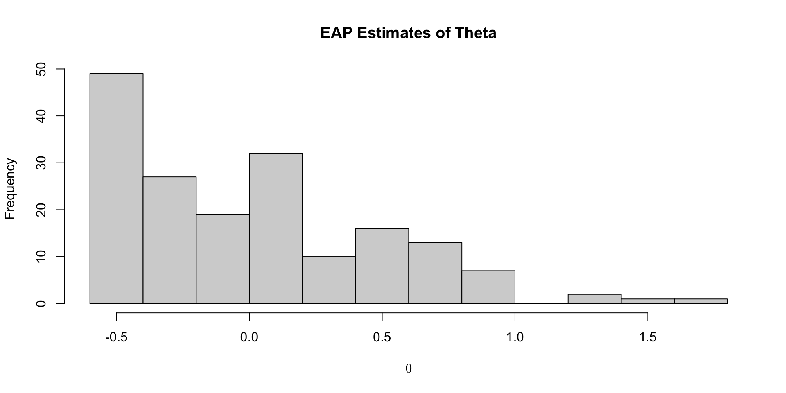Density of EAP Estimates

Density of All Posterior Draws
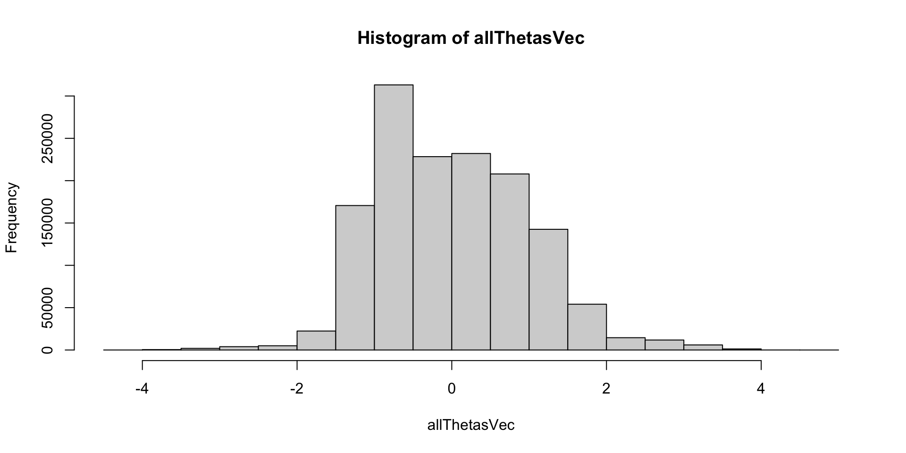Comparing Two Posterior Distributions
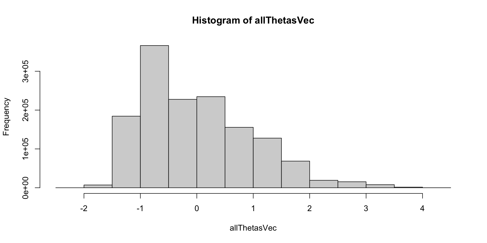Comparing EAP Estimate with Posterior SD
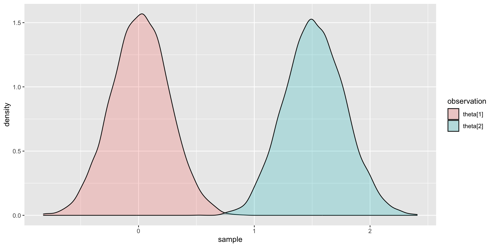Comparing EAP Estimate with Sum Score
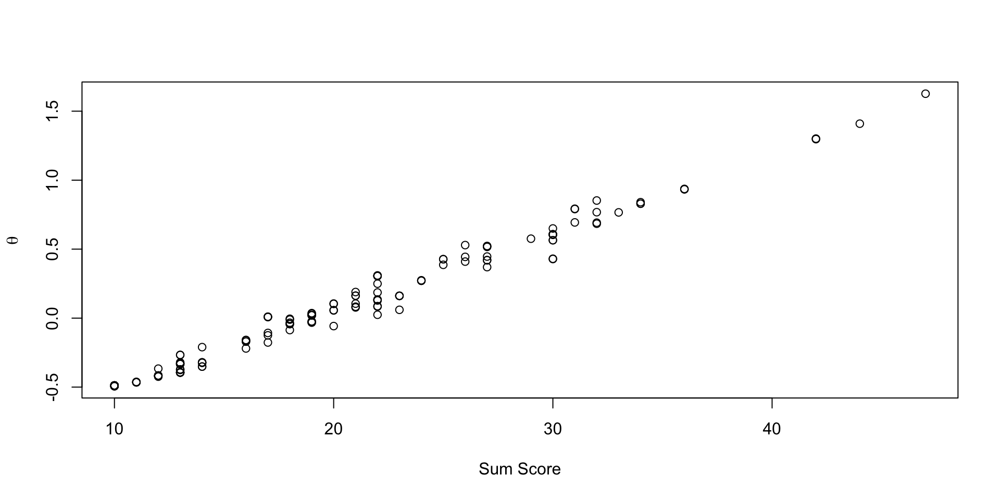Posterior Distribution for Person Parameters
The posterior distribution of the person parameters (the latent variable; for a single person): \[ f(\theta_p \mid \boldsymbol{Y}) \propto f\left(\boldsymbol{Y} \mid \theta_p \right) f\left(\theta_p \right) \]
Here:
- \(f(\theta_p \mid \boldsymbol{Y})\) is the posterior distribution of the latent variable conditional on the observed data
- $f( _p ) $ is the model (data) likelihood
\[ f\left(\boldsymbol{Y} \mid \theta_p \right) = \prod_{i=1}^I f(Y_i \mid \theta_p)\]
- \(f(Y_i \mid \theta_p)\) is the observed data likelihood: \(f(Y_i \mid \theta_p) ~ N(\mu_i + \lambda_i\theta_p, \psi_i)\)
- \(f\left(\theta_p \right) \sim N(0,1)\) is the prior likelihood for the latent variable \(\theta_p\)
- Technical details: https://jonathantemplin.com/wp-content/uploads/2022/10/sem15pre906_lecture11.pdf
Measurement Model Estimation Fails
Recall: Stan’s parameters {} Block
parameters {
vector[nObs] theta; // the latent variables (one for each person)
vector[nItems] mu; // the item intercepts (one for each item)
vector[nItems] lambda; // the factor loadings/item discriminations (one for each item)
vector<lower=0>[nItems] psi; // the unique standard deviations (one for each item)
}Here, the parameterization of \(\lambda\) (factor loadings/discrimination parameters) can lead to problems in estimation
- The issue: \(\lambda_i \theta_p = (-\lambda_i)(-\theta_p)\)
- Depending on the random starting values of each of these parameters (per chain), a given chain may converge to a different region
- To demonstrate (later), we will start with a different random number seed
- Currently using 09102022: works fine
- Change to 25102022: big problems
New Samples Syntax
Trying the same model with a different random number seed:
Convergence: FAIL
[1] 1.532298Why Convergence Failed
The issue: \(\lambda_i \theta_p = (-\lambda_i)(-\theta_p)\)
# A tibble: 30 × 10
variable mean median sd mad q5 q95 rhat ess_bulk ess_tail
<chr> <dbl> <dbl> <dbl> <dbl> <dbl> <dbl> <dbl> <dbl> <dbl>
1 mu[1] 2.37 2.37 0.0878 0.0887 2.23 2.51 1.00 1704. 3765.
2 mu[2] 1.96 1.96 0.0847 0.0833 1.82 2.10 1.00 1191. 2744.
3 mu[3] 1.88 1.88 0.0838 0.0844 1.74 2.02 1.00 1294. 3114.
4 mu[4] 2.01 2.01 0.0848 0.0835 1.87 2.15 1.00 1215. 3021.
5 mu[5] 1.99 1.99 0.0847 0.0843 1.85 2.13 1.00 911. 2148.
6 mu[6] 1.90 1.90 0.0765 0.0754 1.77 2.02 1.00 938. 2099.
7 mu[7] 1.73 1.73 0.0761 0.0755 1.60 1.85 1.00 1222. 2651.
8 mu[8] 1.85 1.84 0.0730 0.0729 1.72 1.96 1.00 927. 2010.
9 mu[9] 1.81 1.81 0.0870 0.0882 1.67 1.95 1.00 1268. 2962.
10 mu[10] 1.52 1.52 0.0804 0.0818 1.39 1.65 1.00 1679. 3728.
11 lambda[1] -0.371 -0.705 0.647 0.127 -0.867 0.808 1.53 7.12 27.0
12 lambda[2] -0.437 -0.837 0.760 0.120 -0.994 0.934 1.53 7.19 30.2
13 lambda[3] -0.403 -0.770 0.701 0.121 -0.923 0.865 1.53 7.18 30.1
14 lambda[4] -0.423 -0.810 0.736 0.121 -0.964 0.910 1.53 7.20 27.6
15 lambda[5] -0.500 -0.966 0.868 0.109 -1.11 1.06 1.53 7.29 29.0
16 lambda[6] -0.451 -0.872 0.783 0.101 -1.00 0.959 1.53 7.24 29.1
17 lambda[7] -0.384 -0.736 0.667 0.108 -0.873 0.824 1.53 7.21 28.5
18 lambda[8] -0.429 -0.829 0.743 0.0931 -0.951 0.908 1.53 7.24 30.0
19 lambda[9] -0.431 -0.827 0.751 0.124 -0.984 0.929 1.53 7.18 30.4
20 lambda[10] -0.338 -0.641 0.588 0.117 -0.790 0.738 1.53 7.15 29.6
21 psi[1] 0.892 0.890 0.0500 0.0491 0.813 0.977 1.00 15991. 6212.
22 psi[2] 0.734 0.733 0.0426 0.0417 0.667 0.807 1.00 14525. 6694.
23 psi[3] 0.782 0.779 0.0448 0.0445 0.710 0.857 1.00 15772. 6470.
24 psi[4] 0.757 0.755 0.0447 0.0436 0.688 0.835 1.00 14214. 6286.
25 psi[5] 0.545 0.543 0.0375 0.0383 0.486 0.609 1.00 9175. 7161.
26 psi[6] 0.505 0.504 0.0339 0.0338 0.452 0.563 1.00 9744. 6970.
27 psi[7] 0.686 0.684 0.0408 0.0413 0.622 0.755 1.00 13685. 6203.
28 psi[8] 0.480 0.478 0.0315 0.0309 0.429 0.533 1.00 9735. 6357.
29 psi[9] 0.782 0.780 0.0459 0.0453 0.711 0.859 1.00 13962. 6709.
30 psi[10] 0.840 0.838 0.0472 0.0467 0.766 0.922 1.00 15695. 6457. Posterior Trace Plots of \(\lambda\)
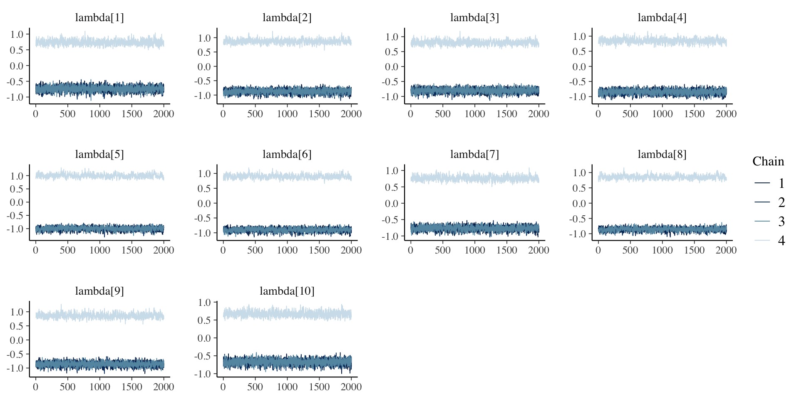Posterior Density Plots of \(\lambda\)

Examining Latent Variables
# A tibble: 177 × 10
variable mean median sd mad q5 q95 rhat ess_bulk ess_tail
<chr> <dbl> <dbl> <dbl> <dbl> <dbl> <dbl> <dbl> <dbl> <dbl>
1 theta[1] -0.0112 -0.0124 0.246 0.241 -0.420 0.388 1.00 5428. 4806.
2 theta[2] -0.762 -1.41 1.35 0.402 -1.92 1.74 1.53 7.12 27.3
3 theta[3] -0.850 -1.58 1.49 0.420 -2.11 1.92 1.53 7.12 28.2
4 theta[4] 0.461 0.827 0.847 0.387 -1.15 1.29 1.53 7.10 28.2
5 theta[5] -0.0161 -0.0148 0.249 0.252 -0.424 0.384 1.01 884. 4643.
6 theta[6] 0.486 0.871 0.892 0.395 -1.21 1.36 1.53 7.12 26.9
7 theta[7] 0.170 0.238 0.390 0.368 -0.562 0.721 1.45 7.77 26.8
8 theta[8] 0.0254 0.0241 0.247 0.248 -0.380 0.433 1.03 111. 3910.
9 theta[9] 0.389 0.674 0.730 0.396 -1.00 1.15 1.53 7.11 26.5
10 theta[10] -0.0232 -0.0241 0.247 0.249 -0.431 0.381 1.01 924. 4544.
# ℹ 167 more rowsPosterior Trace Plots of \(\theta\)

Posterior Density Plots of \(\theta\)
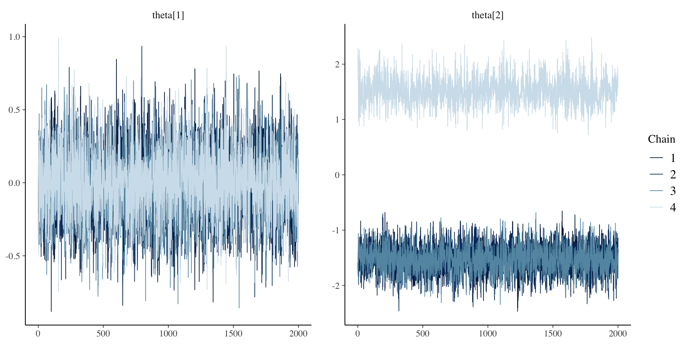Fixing Convergence
Stan allows starting values to be set via cmdstanr
- Documentation is very lacking, but with some trial and a lot of error, I will show you how
Alternatively:
- Restrict \(\lambda\) to be positive
- Truncates prior distribution with MVN
- Can also choose prior that has strictly positive range (like log-normal)
- Note: The restriction on the space of \(\lambda\) will not permit truely negative values
- Not ideal as negative \(\lambda\) values are informative as a problem with data
parameters {
vector[nObs] theta; // the latent variables (one for each person)
vector[nItems] mu; // the item intercepts (one for each item)
vector<lower=0>[nItems] lambda; // the factor loadings/item discriminations (one for each item)
vector<lower=0>[nItems] psi; // the unique standard deviations (one for each item)
}Setting Starting Values in Stan
Starting values (initial values) are the first values used when an MCMC chain starts
- In Stan, by default, parameters are randomly started between -2 and 2
- Bounded parameters are transformed so they are unbounded in the algorithm
- What we need:
- Randomly start all \(\lambda\) parameters so that they converge to the \(\lambda_i\theta_p\) mode
- As opposed to the \((-\lambda_i)(-\theta_p)\) mode
- Randomly start all \(\lambda\) parameters so that they converge to the \(\lambda_i\theta_p\) mode
cmdstanr Syntax for Initial Values
Add the init option to the $sample() function of the cmdstanr object:
The init option can be specified as a function, here, randomly starting each \(\lambda\) following a normal distribution
Initialization Process
See the lecture R syntax for information on how to confirm starting values are set
Final Results: Parameters
[1] 1.006028# A tibble: 30 × 10
variable mean median sd mad q5 q95 rhat ess_bulk ess_tail
<chr> <dbl> <dbl> <dbl> <dbl> <dbl> <dbl> <dbl> <dbl> <dbl>
1 mu[1] 2.37 2.37 0.0866 0.0848 2.23 2.51 1.00 1126. 2140.
2 mu[2] 1.95 1.95 0.0858 0.0855 1.82 2.10 1.00 834. 1671.
3 mu[3] 1.87 1.87 0.0843 0.0832 1.74 2.01 1.00 945. 1919.
4 mu[4] 2.01 2.01 0.0848 0.0853 1.87 2.15 1.00 905. 1957.
5 mu[5] 1.98 1.98 0.0849 0.0837 1.85 2.12 1.01 667. 1424.
6 mu[6] 1.89 1.89 0.0775 0.0754 1.77 2.02 1.01 663. 1312.
7 mu[7] 1.72 1.72 0.0769 0.0762 1.60 1.85 1.00 865. 1567.
8 mu[8] 1.84 1.84 0.0740 0.0720 1.72 1.96 1.01 664. 1355.
9 mu[9] 1.81 1.81 0.0873 0.0865 1.66 1.95 1.00 843. 1769.
10 mu[10] 1.52 1.52 0.0802 0.0788 1.39 1.65 1.00 1179. 2697.
11 lambda[1] 0.739 0.737 0.0826 0.0820 0.606 0.878 1.00 3067. 4467.
12 lambda[2] 0.870 0.869 0.0773 0.0776 0.745 0.999 1.00 2126. 3216.
13 lambda[3] 0.803 0.801 0.0769 0.0769 0.680 0.933 1.00 2515. 4205.
14 lambda[4] 0.844 0.843 0.0771 0.0766 0.719 0.972 1.00 2192. 3562.
15 lambda[5] 0.997 0.995 0.0710 0.0702 0.884 1.12 1.00 1471. 2884.
16 lambda[6] 0.899 0.897 0.0645 0.0643 0.798 1.01 1.00 1325. 2700.
17 lambda[7] 0.764 0.763 0.0699 0.0701 0.653 0.880 1.00 1959. 3704.
18 lambda[8] 0.854 0.851 0.0619 0.0619 0.756 0.959 1.00 1417. 2881.
19 lambda[9] 0.861 0.858 0.0794 0.0798 0.737 0.998 1.00 2062. 3667.
20 lambda[10] 0.673 0.671 0.0777 0.0767 0.548 0.805 1.00 2906. 3929.
21 psi[1] 0.892 0.889 0.0496 0.0489 0.814 0.977 1.00 12735. 6249.
22 psi[2] 0.735 0.733 0.0428 0.0433 0.669 0.807 1.00 12024. 6824.
23 psi[3] 0.781 0.780 0.0459 0.0457 0.708 0.859 1.00 12240. 6149.
24 psi[4] 0.758 0.756 0.0443 0.0445 0.688 0.833 1.00 12364. 6171.
25 psi[5] 0.545 0.544 0.0370 0.0364 0.486 0.608 1.00 7710. 6597.
26 psi[6] 0.505 0.503 0.0340 0.0333 0.452 0.564 1.00 8278. 6590.
27 psi[7] 0.686 0.683 0.0403 0.0396 0.623 0.755 1.00 12596. 6270.
28 psi[8] 0.480 0.479 0.0319 0.0310 0.429 0.534 1.00 8420. 6669.
29 psi[9] 0.782 0.780 0.0455 0.0449 0.710 0.860 1.00 12865. 6131.
30 psi[10] 0.840 0.838 0.0474 0.0473 0.765 0.920 1.00 15265. 6184.Comparing Results
Plot of all parameters across both algorithm runs:
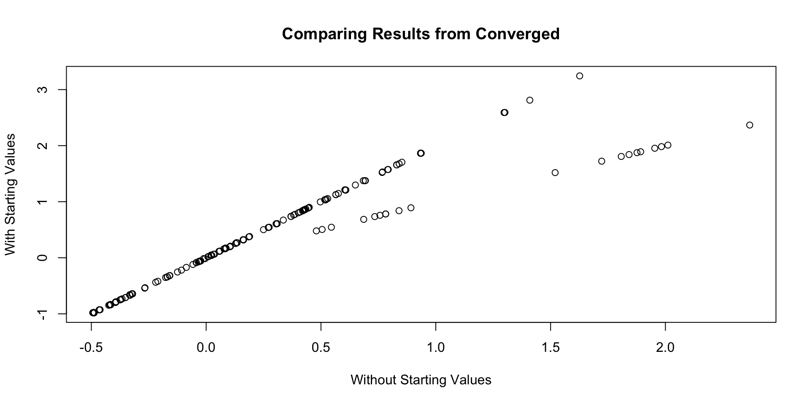Correlation of all parameters across both algorithm runs:
[1] 0.9486459Wrapping Up
Wrapping Up
Today, we showed how to model observed data using a normal distribution
- Assumptions of Confirmatory Factor Analysis
- Not appropriate for our data
- May not be appropriate for many data sets
- We will have to keep our loading/discrimination parameters positive to ensure each chain converges to the same posterior mode
- This will continue through the next types of data
- Next up, categorical distributions for observed data
- More appropriate for these data as they are discrete categorical responses